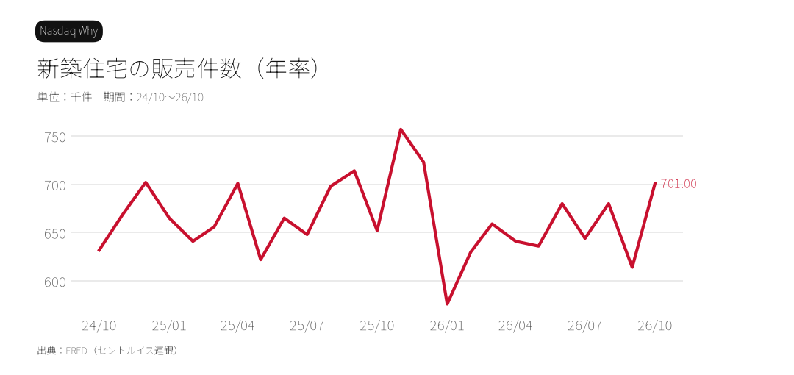

米国経済のまとめ｜毎週土曜
11/23〜11/27の米国経済：株は上昇、でも利上げ観測で不安心理
11/23〜11/27のまとめ
11/23〜11/27の1週間で、S&P500は+1.70%、ナスダック総合は+1.05%、ダウ平均は+3.42%、半導体指数（SOX）は-2.47%。恐怖・強欲指数（独自）は22で「極度の恐怖」。
雇用者数の増減（3か月平均）は3か月前の+2.8万人から+13.7万人に増え、失業率は3か月前の4.1%から4.1%で変わりません。一方、CPI（消費者物価）の前年比は1年前の3.0%から3.7%に上がり、10年債の利回り（月平均）も1年前の4.09%から4.97%に上がりました。
長短金利差（10年債−2年債）は+0.29ポイントで、逆イールドが終わってから27か月です。過去の統計では、プラスに戻った後に景気後退が始まった例が4回あり、戻ってから始まるまでの中央値は10か月でした。
雇用が強いまま物価が落ち着くシナリオも、利上げで景気が冷えるシナリオも考えられます。まずは12/3の失業保険の申請、12/4の雇用統計、12/10のCPIを見ておきましょう。
数字で見る11/23〜11/27
| 今 | 1週間・3か月 | 年初から・1年前 | |
|---|---|---|---|
| S&P500 | 7,297.49 | +1.70% | +6.4% |
| ナスダック総合 | 24,129.50 | +1.05% | +3.8% |
| ダウ平均 | 50,774.94 | +3.42% | +4.9% |
| 半導体指数（SOX） | 9,186.71 | -2.47% | +24.7% |
| 恐怖・強欲指数（独自） | 22（極度の恐怖） | 1週間前 29 | 1か月前 33 |
| 失業率（2026年10月） | 4.1% | 3か月前 4.1% | 1年前 ― |
| CPI 前年比（2026年9月） | 3.7% | 3か月前 3.5% | 1年前 3.0% |
| 政策金利（実効・月平均）（2026年10月） | 3.88% | 3か月前 3.63% | 1年前 4.09% |
| 10年債の利回り（月平均）（2026年11月） | 4.97% | 3か月前 4.68% | 1年前 4.09% |
| 長短金利の差（10年−2年・月平均）（2026年11月） | +0.29ポイント | 3か月前 +0.47ポイント | 1年前 +0.54ポイント |
※株価指数は 11/27 の終値。月平均と書いたものは、その月の毎日の値の平均。
恐怖・強欲指数は、株価の勢い・VIX・株と国債・低格付け社債・広がりの5つを、直近2年の中での位置（0〜100）にして平均した NasdaqWhy の独自の計算です。CNN の指数とは別物です。
商品（原油・金・穀物など）の1週間
| 値段 | 1週間 | 1年 | |
|---|---|---|---|
| 原油（WTI） | 83.08 ドル/バレル | -0.2% | +41.7% |
| 天然ガス | 3.49 ドル | +6.8% | -23.4% |
| 金 | 3,668.50 ドル/オンス | -0.5% | -11.9% |
| 銀 | 43.70 ドル/オンス | -1.4% | -17.4% |
| 銅 | 5.60 ドル/ポンド | -0.4% | +9.7% |
| 小麦 | 591.00 セント/ブッシェル | +2.2% | +11.7% |
| トウモロコシ | 463.00 セント/ブッシェル | +5.5% | +7.2% |
| 大豆 | 1,266.25 セント/ブッシェル | +4.9% | +11.9% |
先物の終値（11/27）。データ：Yahoo Finance。
11/23〜11/27の主なニュース
- 中東で原油の供給が細るリスクが意識され、原油の値段が上がりました。（Crude Oil Prices Today | OilPrice.com 11/27）
- 米国がイラクとベネズエラにOPEC（産油国の集まり）から抜けるよう促したと伝えられました。（OilPrice.com 11/27）
- 黒海周辺の緊張と輸出の需要の強さを受けて、小麦の先物が上がりました。（Fastmarkets 11/24）
- 新しいデータでは、今年これまでの人員削減は41%減っています。（WSJ 11/26）
- FRBの利上げが近いとみられる中、住宅ローン金利は少し下がりました。（Realtor.com 11/25）
有名人のコメント（ニュースの見出しより）
- ジョン・ウィリアムズ（ニューヨーク連銀総裁）：物価の上昇はまだ高すぎて、さらに利上げする可能性があると示しました。（Reuters 11/23）
- スコット・ベッセント（財務長官）：FRBが金融を引き締めすぎると、経済を危うくするおそれがあると述べました。（Bloomberg 11/23）
- ビル・アックマン（投資家）：米国経済がまた景気後退に向かうかもしれないとして、ケビン・ウォーシュ氏が率いるFRBを批判しました。（Fortune 11/24）
- トム・リー（ストラテジスト）：株式市場はすでに底を打ったとし、2018年に似たVIX（恐怖指数）の急上昇を根拠に挙げました。（BigGo Finance 11/26）
次に注目するデータ
- 12/3：新規失業保険の申請件数
- 12/4：雇用統計（失業率・雇用者数）
- 12/10：消費者物価指数（CPI）
- 12/23：GDP（速報など）
- 失業率が 5.6%以上になると、サームルールが計算上 0.50（景気後退のサインとされる水準）に届く
考えられるシナリオ
予想ではなく、今のデータと過去の統計から考えられるシナリオと、そのときのデータの出方です。
- 底堅い景気：雇用が伸び続け、景気の勢いが保たれるシナリオです。
サイン：雇用者数の増加が続き、失業率や失業保険の申請が低いまま推移します。 - 利上げで減速：金利の上昇で、借りる人や企業の動きが鈍くなるシナリオです。
サイン：失業保険の申請が増え、サームルール（失業率から景気後退を探る目安）が上がり始めます。 - 物価の再加速：物価の上昇が強まり、金利の高い状態が長く続くシナリオです。
サイン：CPIの前年比がさらに上がり、10年債の利回りも高い水準が続きます。
経営陣・大株主の自社株の売買（11/23〜11/27の Form 4）
取引所で売った・買った分（ストックオプションの行使などは除く）。「10b5-1」は、Form 4 に前もって決めた売却計画（10b5-1）による取引と表示されているもの。表示がなくても、事前の計画が一切なかったとは限りません。
| 会社 | 人 | 金額 | 10b5-1 | |
|---|---|---|---|---|
| パランティア | THIEL PETER 取締役 | 買い | 1億ドル | あり |
| パランティア | Karp Alexander C. See Remarks | 売り | 7,512万ドル | あり |
| パランティア | Sankar Shyam See Remarks | 売り | 5,753万ドル | あり |
| パランティア | Taylor Ryan D. See Remarks | 売り | 727万ドル | あり |
| パランティア | Glazer David A. See Remarks | 売り | 625万ドル | あり |
| アマゾン | Jassy Andrew R President and CEO | 売り | 513万ドル | あり |
| エヌビディア | Teter Timothy S. EVP, General Counsel and Sec | 売り | 454万ドル | あり |
| アマゾン | Zapolsky David Senior Vice President | 売り | 392万ドル | あり |
| アマゾン | Garman Matthew S CEO Amazon Web Services | 売り | 373万ドル | あり |
| アマゾン | Herrington Douglas J CEO Worldwide Amazon Stores | 売り | 162万ドル | あり |
| アマゾン | Olsavsky Brian T Senior Vice President and CFO | 売り | 160万ドル | あり |
| メタ | Olivan Javier Chief Operating Officer | 売り | 88万ドル | あり |
過去の統計から見る、今の位置
データ：FRED（景気後退の月は全米経済研究所 NBER の判定）、Yahoo Finance。過去の例は回数が少ないため目安です。景気後退の判定は後から決まるため、最近の月はまだ判定されていないことがあります。
1976年以降の逆イールド（2か月以上）は 8回。そのうち 6回は、始まってから4年以内に景気後退が始まった。開始から景気後退までは 11〜23か月（中央値 18か月）。2回は逆イールドの間に、4回はプラスに戻ってから始まった。プラスに戻ってから始まった回は、戻ってから 4〜22か月後（中央値 10か月）。 今（2026年11月の平均）は +0.29ポイント。直近の逆イールドは 2022年7月〜2024年8月で、終わってから 27か月。
サームルールは 2026年10月が 0.00。1959年以降、0.50を上回ったのは 13回で、そのうち 11回は前後1年以内に景気後退が始まっていた。最新の失業率は 4.1%（2026年10月）。計算上、次の月の失業率が 5.6%以上になると 0.50 に届く。
今の失業率 4.1%は、過去12か月の最低から +0.0ポイント。過去の景気後退が始まる直前は、同じ上昇幅の中央値が +0.3ポイントだった（11回）。
1950年以降、S&P500が高値から20%以上下がったのは 11回。そのうち 7回は景気後退と重なった。今は最高値（2026/10/06）から -6.7%。表は、高値をつけた月の失業率・政策金利・物価・長短金利差。
新しく発表された指標
毎日・毎週の数字
| 新規失業保険の申請件数（週） | 11/14までの1週間は 20.3万件。 |
|---|---|
| 政策金利（FRBの目標） | 11/27時点で 3.75〜4.00%。 |
| 2年債と10年債の利回り | 11/25時点で、2年債は 4.61%、10年債は 4.85%。 |
| 長短金利の差（10年−2年） | 11/27時点で +0.25ポイント（10年債の方が高い）。 |
| FRBの総資産 | 11/25時点で 6.73兆ドル。 |
| NY連銀 SOMA（FRBが持つ国債など） | 11/25時点で 6.36兆ドル。 |
| 米国の政府の借金（債務残高） | 11/25時点で 40.77兆ドル。 |
| 住宅ローン金利（30年固定） | 11/25の週は 7.21%。 |
| 原油の商業在庫（戦略備蓄を除く） | 11/20までの週で 418.9百万バレル。 |
| 戦略石油備蓄（SPR） | 11/20までの週で 273.5百万バレル。 |
| ガソリン価格（レギュラー・全米平均） | 11/23の週は 1ガロン 3.64ドル。 |
| 銀行がFRBに預けているお金（準備預金） | 11/25は 2.96兆ドル。 |
| リバースレポ（FRBにあずけられたお金） | 11/27は 3億ドル。 |
| 財務省の口座（TGA） | 11/25は 0.90兆ドル。 |
| 恐怖指数（VIX） | 11/27の終値は 23.81。 |
| NasdaqWhy 恐怖・強欲指数（独自の計算） | 11/25は 22（極度の恐怖）。 |
新築住宅の販売件数（年率）
2026年10月は 701千件。前回は 614千件、1年前は 652千件。

11/23〜11/27の半導体トピック
米国に加えて、韓国・日本・台湾などの会社の動き（ニュースの見出しより）。
- エヌビディアが基板の生産枠を確保し、韓国の新興半導体企業は調達難に（digitimes）
- 韓国政府がAI半導体の供給網を点検。HBMと基板の不足が小規模設計企業の重荷（BigGo Finance）
- マイクロンがシンガポールと台湾でHBMの増産を急ぐ（Chosunbiz）
- マイクロンが台湾とシンガポールでHBMへの投資を加速する。（digitimes、Chosunbiz）
- BNPパリバのアナリストがメモリーの供給過剰リスクの高まりを指摘した。（MarketWatch）
- サムスン電子がAI向けSSD需要を背景に西安のNAND生産を大幅に増やす。（Businesskorea）
- トレンドフォースがDRAM価格の予想を引き下げ、NANDの値下がりも見込んだ（TradingView、Chosunbiz）
- AI需要の急増で、製造装置とパッケージ基板まわりで供給不足が起きている（KuCoin）
- DDR5・DDR4の価格高騰の中、年末商戦の値引き情報が出ている（Tom's Hardware、Tom's Hardware）
- GF証券がDRAM価格の予想を引き下げた（Seeking Alpha、GuruFocus）
- DRAM不足で、機器メーカーが少量ずつの調達を迫られている（TweakTown）
- 野村がAIサーバー見通しを上げ、TSMCのCoWoS増強を見込む（BigGo Finance）
- サムスンとDBハイテックは、AI向け電源チップの注文で工場が埋まり、8インチの受託生産の値上げを進めています。（Crypto Briefing）
- サムスンは、HBM（AI向けの高速メモリー）の増産のため、Protecの接合装置を追加で注文しました。（TheElec）
- SK hynixが、ライバルのキオクシアの筆頭株主になる見込みと伝えられました。（24/7 Wall St.）
- 米国は、AI向けでない16nmのチップにも事前の許可のルールを広げ、サムスンの受託生産に中国関連の不確かさが生まれました。（BigGo Finance）
- 米国の対中国の規制で、エヌビディアのB300チップが市場に多く出回っています。（BusinessKorea）
- ファーウェイとキオクシアが、サムスンとSK hynixが強いHBMの分野に挑んでいます。（The Korea Herald）
11/23〜11/27の決算の解説
- Lenovo（聯想）（2026年7〜9月期）：売上は過去最高の+48%なのに、なぜ赤字になった？
- PDD／Temu（拼多多）（2026年7〜9月期）：売上は横ばいなのに、なぜ営業利益は25%増えた？
- Xiaomi（小米）（2026年7〜9月期）：スマホの台数は3割減なのに、なぜ1台の値段は4割上がった？
- Kingsoft Cloud（金山雲）（2026年7〜9月期）：売上は40%増なのに、なぜまだ赤字が続く？
データ：FRED（セントルイス連銀。もとは米労働省・米商務省・FRB など）、米エネルギー情報局（EIA）、ニューヨーク連銀、米財務省、SEC（13F・Form 4）、Yahoo Finance。コメントはニュースの見出しの要約です。
📝 note でも読めます（図つき・まとめ）：note.com/nasdaqwhy